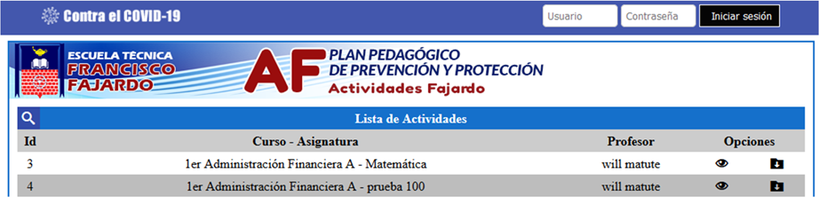
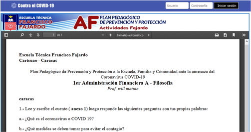
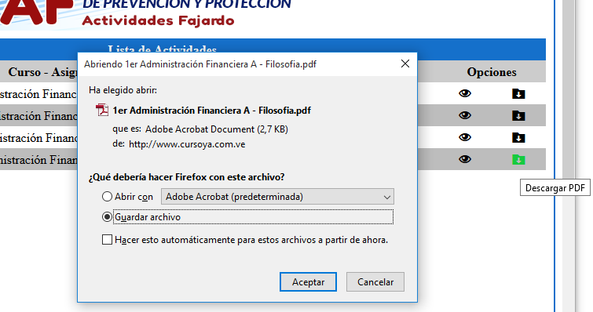

Página 1 / 6
Primeros Pasos
Para empezar, hay que ponernos en contexto de lo que esta pasando ahora, para nadie es un misterio lo que esta pasando en el mundo, como el COVID-19 destruye países enteros solamente por existir, como la educación ha decaído tanto en el ultimo año, y no solamente en Venezuela. Las escuelas han llegado a puntos absurdos de repitientes y alumnos aplazados, si no siguen un buen plan de estudio debido a esta pandemia, por lo que, básicamente, casi todas las escuelas cayeron ante este hecho.
Ninguna empresa, gobierno, o escuela estaba preparado para esta pandemia, esa es la cruda realidad. Tuvieron que pasar meses, para que una escuela se pudiera declarar otra vez como que están haciendo algo con los estudiantes. Muchas empresas quebraron ante este hecho, muchos deportistas se desanimaron, mucha gente tuvo miedo, y mucha otra gente murió. Esa es la verdad de nuestros días, la verdad del COVID-19.
Pero, ¿cómo hizo frente a este hecho la E.T. "Francisco Fajardo"?, ¿cómo fue su punto de vista?, ¿qué hicieron?. Para eso hay que hablar sobre un plan del gobierno llamado "Cada Familia Una Escuela", que básicamente era que las actividades los estudiantes la recibían por televisión y radio en el canal de VTV, pero el Francisco Fajardo es una escuela técnica, este programa no servia de mucho, las actividades que se supone que estaban haciendo hace un par de meses eran unas totalmente diferentes a las que dictaban en este programa.
AF son las siglas del sistema que crearon para hacer frente a la pandemia del COVID-19. Consiste en que los estudiantes envíen las actividades correspondientes vía correo electrónico al profesor, y las actividades se describían en este sistema; el funcionamiento era sencillo, solamente seleccionabas el curso en el que estabas actualmente, y te aparecían todas las evaluaciones que tienes para hacer con su correspondiente profesor. Y tenias la opción de ver de forma online la evaluación, o descargarla en formato PDF para verla sin internet o imprimirla.

Esta era la interfaz de ese sistema, bastante agradable a la vista, un diseño sencillo pero intuitivo, algo que podría manejar cualquier estudiante. Al seleccionar un curso algo así te va a aparecer, en este caso seleccione el curso de 1er de Administración Financiera "U", y en este caso tiene una actividad de Matemáticas del profesor Will Matute, y otra más. Puedo descargarla o verla online.

Esto es lo que aparecía cuando le daba click en el botón para verla online. En este caso era otra actividad, pero se entiende el punto al que quiero llegar. Te mostraba toda la actividad que escribiera el profesor y podrías ser evaluado normalmente como si no estuviera la pandemia.

Y esto es lo que aparecía cuando le dabas click en el botón de descargar, y esto te descargaba un archivo PDF con la actividad.
Muy bueno el sistema, y suficiente para los requerimientos de los profesores y los estudiantes. Pero, ¿qué pasaba con las actividades de álgebra?, ¿o con los profesores que les gusta colocar imágenes?, o cuando una actividad necesitaba ser explicada con un videos, ¿cómo se insertaba?. Todos esos problemas del anterior sistema creado por el profesor Will Matute, lo tuvieron que solucionar subiendo las actividades de matemáticas y álgebra a un Blog en Blogger, y no colocando imágenes en ninguna de las actividades, y los videos por un enlace a YouTube u otra plataforma.
Así que, ¿qué quiero llegar con todo esto?, este sistema es viejo, esta es la historia de como el Francisco Fajardo hizo frente a esta pandemia en lo que quedaba de año escolar, por que la pandemia inicio a mediados de la mitad del año escolar. Pero, para el otro año escolar tenian que mejorar todos los problemas que tenian con el anterior sistema.